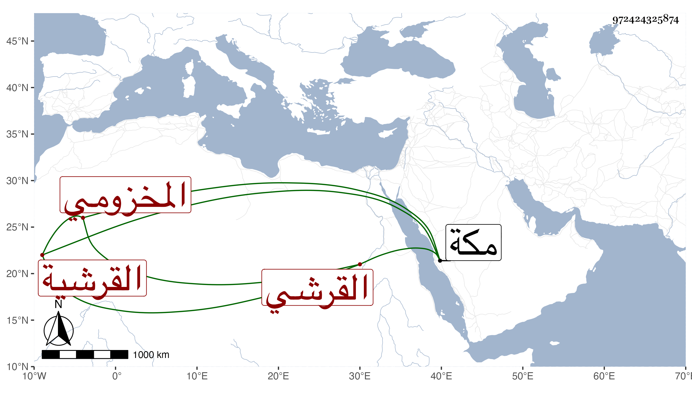

0902Sakhawi.DawLamic.ITO20230111-ara1.EIS1600.972424325874
Biography ID: 972424325874
731
كمالية ابنة علي بن عبد الكريم بن أحمد بن عطية بن ظهيرة أم الوفا القرشية ، أمها عائشة ابنة عبد الرحمن بن حسن بن هرون القرشي المخزومي . أجاز لها في سنة ثمان وثمانين وسبعمائة فما بعدها النشاورى والصردى وابن حاتم والعراقي والهيثمي وآخرون ، وتزوجها محمد بن عبد الملك بن محمد المرجاني ثم بعد موته أخوه عبد الرحمن ومات عنها فتأيمت حتى ماتت في ربيع الآخر سنة سبع وخمسين بمكة ؛ أجازت لنا وروى عنها النجم بن فهد قال كانت مباركة خيرة عرض لها حصر البول حتى قيل إنها أخرجت قبل موتها بيسير حجرا زنته بالمصري ستة وثلاثون درهما فلما نشف نقص درهما .
